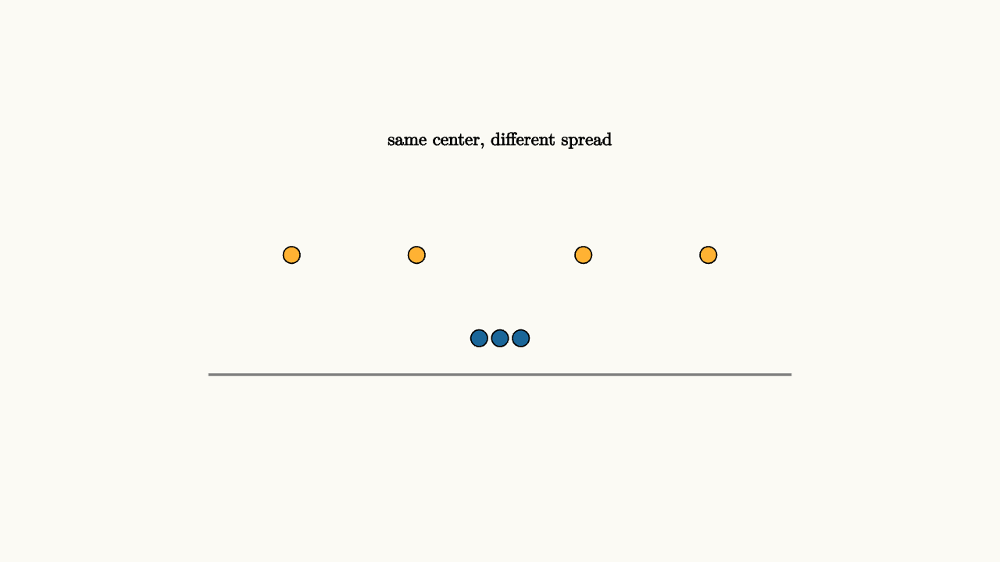

Variance Measures How Surprises Spread
Two choices can have the same expected value and feel completely different. A guaranteed $50$ and a coin flip between $0$ and $100$ both average to $50$. The second choice spreads outcomes farther from the center.
That difference shows up in ordinary planning. Imagine two routes to school. Route A takes 25 minutes almost every day. Route B averages 22 minutes, but sometimes takes 12 minutes and sometimes takes 45. If the only goal is the long-run average, Route B looks better. If arriving late has a real cost, the spread becomes part of the decision. Variance is the mathematics of that discomfort.
Variance measures that spread:
The square makes large deviations count strongly and prevents positive and negative deviations from canceling. Standard deviation is the square root of variance, putting the spread back in the original units.
The units matter. If $X$ is measured in minutes, variance is measured in squared minutes, which is awkward to interpret. The standard deviation returns to minutes, dollars, points, or whatever units the original variable used. A commute with standard deviation 2 minutes feels predictable. A commute with standard deviation 18 minutes asks for a bigger buffer.

source
background = [0.985, 0.98, 0.955, 1]
camera = Camera(4.8b)
mesh spread = block {
. stroke{GRAY, 2} Line(start: [-2.8, -0.9, 0], end: [2.8, -0.9, 0])
. fill{BLUE} center{[-0.2, -0.55, 0]} Circle(0.08)
. fill{BLUE} center{[0.0, -0.55, 0]} Circle(0.08)
. fill{BLUE} center{[0.2, -0.55, 0]} Circle(0.08)
. fill{ORANGE} center{[-2.0, 0.25, 0]} Circle(0.08)
. fill{ORANGE} center{[-0.8, 0.25, 0]} Circle(0.08)
. fill{ORANGE} center{[0.8, 0.25, 0]} Circle(0.08)
. fill{ORANGE} center{[2.0, 0.25, 0]} Circle(0.08)
. center{[0, 1.35, 0]} Text("same center, different spread", 0.62)
}
"spread around average"
play Fade(0.6)Variance appears in everyday planning. Travel time with a low average and high variance can be stressful if being late is expensive. A budget with volatile expenses needs more cash buffer than a budget with steady expenses. A medical test with noisy measurements needs repeated readings.
Variance also explains diversification. If two investments move independently, averaging them can reduce overall volatility. If they move together, the portfolio keeps much of the same risk.
For two quantities, the shared movement is captured by covariance:
This formula is the quiet reason diversification can work. If the covariance is small or negative, the two surprises partly cancel. If every investment falls during the same recession, the covariance term stays large, and the portfolio is less diversified than it looked.
source
param spread = 0.5
background = [0.985, 0.98, 0.955, 1]
camera = Camera(4.8b)
let Cloud = |spread| block {
. stroke{GRAY, 2} Line(start: [-2.5, 0, 0], end: [2.5, 0, 0])
. fill{BLUE} center{[-spread, 0.35, 0]} Circle(0.08)
. fill{BLUE} center{[-0.45 * spread, -0.2, 0]} Circle(0.08)
. fill{BLUE} center{[0.25 * spread, 0.12, 0]} Circle(0.08)
. fill{BLUE} center{[spread, -0.35, 0]} Circle(0.08)
. center{[0, 1.4, 0]} Tex("\\sigma = \\sqrt{\\operatorname{Var}(X)}", 0.62)
. center{[0, -1.25, 0]} Text("larger standard deviation means wider surprises", 0.62)
}
"tight"
mesh cloud = Cloud(spread: $spread)
play Fade(0.5)
"wide"
spread = 1.35
cloud = Cloud(spread: $spread)
play Lerp(1.0)There is also a practical warning. Variance treats upside and downside deviations symmetrically. For some decisions, a pleasant surprise and a painful surprise deserve different weights. A hospital staffing plan cares much more about being short staffed than over staffed by the same amount. Variance is a useful first measure of spread, then the real decision may require looking at the tails separately.
The lesson to keep: average tells the center, variance tells how far outcomes wander. Planning with probability usually needs both, because a beautiful average can still hide painful surprises.